起動・メイン画面

01 — モード選択ダイアログ
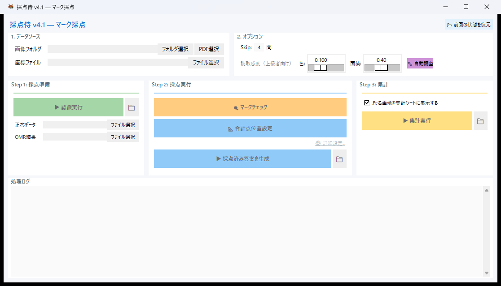
02a — メイン画面 (マーク採点のみ)

02b — メイン画面 (マーク+記述)

02c — メイン画面 (記述のみ)
設定・ダイアログ
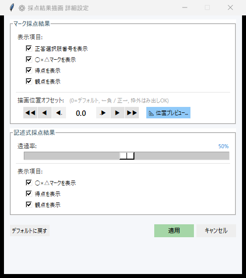
改善③03 — 採点結果描画 詳細設定 (マーク+記述)

改善③03 — 詳細設定 (マーク採点のみ)
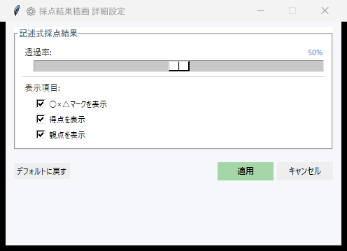
改善③03 — 詳細設定 (記述採点のみ)
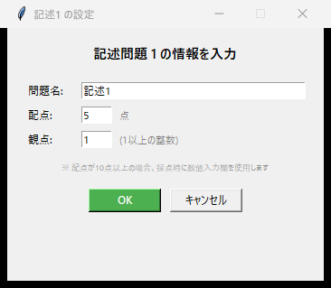
04 — 記述問題の情報設定
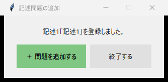
05 — 問題追加ダイアログ
記述採点
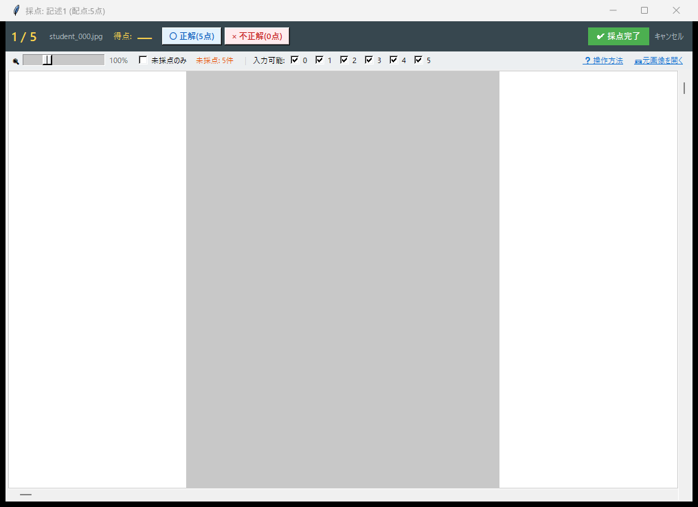
改善①06 — 記述採点 1枚ずつモード (モード切替バー無し)
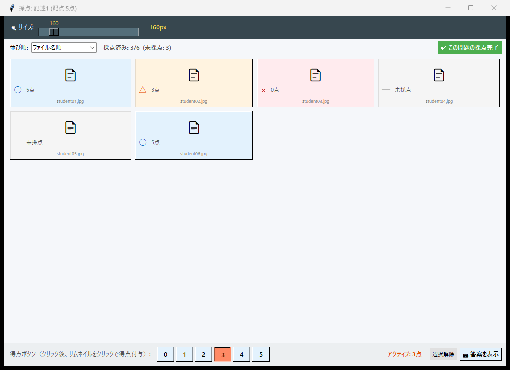
改善①20 — 記述採点 一覧(グリッド)モード
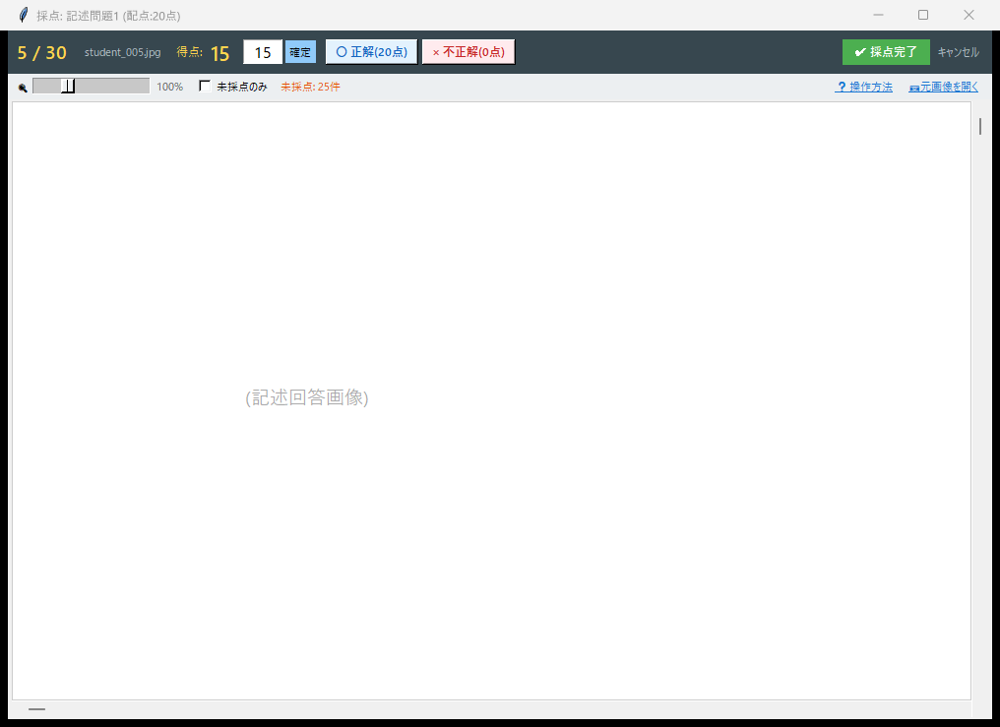
07 — 記述採点 個別入力モード
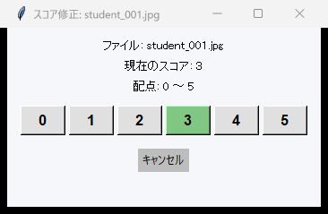
08a — 得点編集ダイアログ (ボタン)
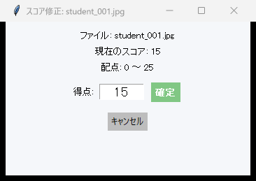
08b — 得点編集ダイアログ (入力)
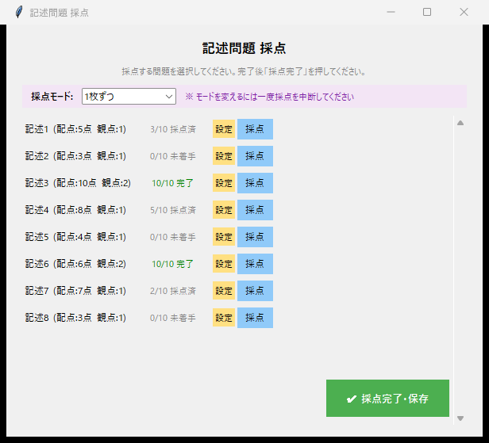
改善①②10 — 記述問題 選択リスト (モード選択+スクロール対応)
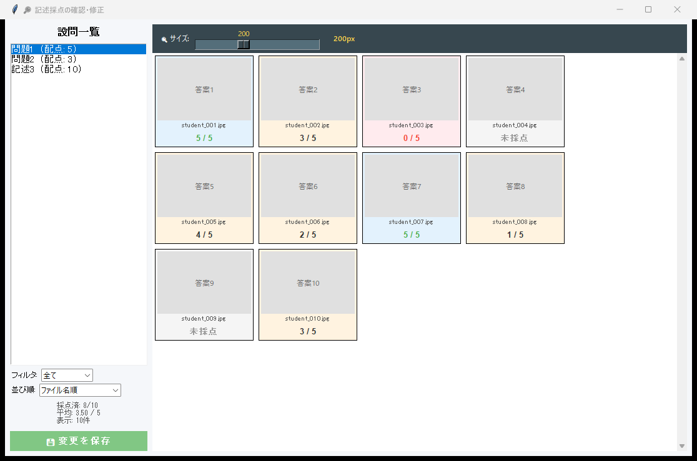
09 — 記述採点レビュー画面
記述問題セットアップ
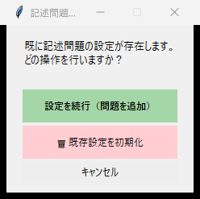
12 — 記述問題セットアップ選択
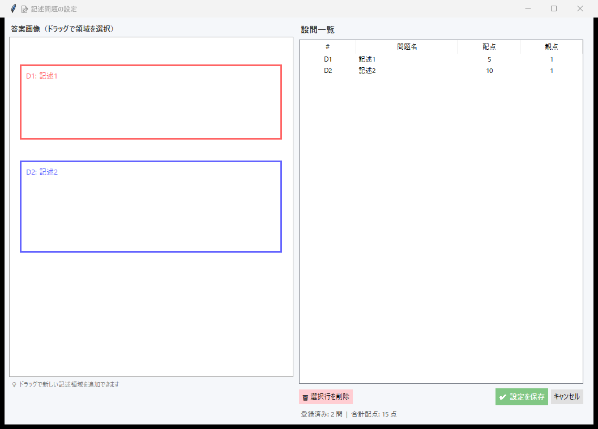
19 — 統合記述問題セットアップ

13 — 合計点位置選択
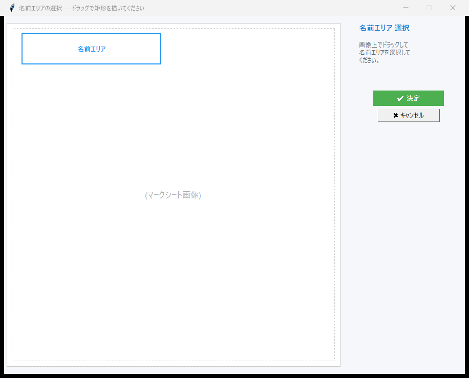
15 — 領域選択
ツール
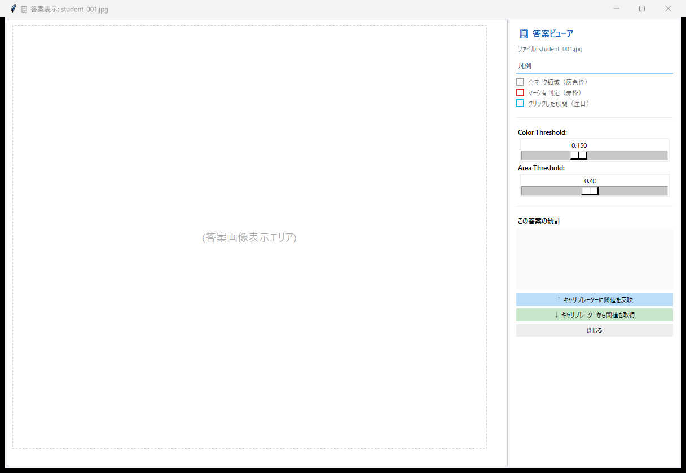
11 — 生徒答案ビューア

改善④17 — 閾値キャリブレーション (ランダム読み取り削除)
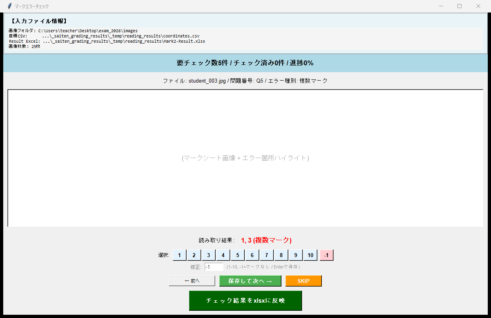
18 — マークエラーチェック

16 — パス修復ダイアログ
画面遷移
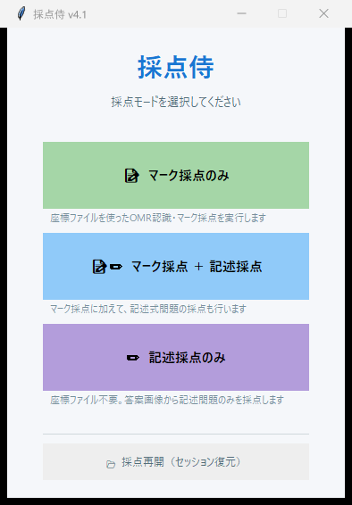
14a — 画面遷移: 起動ダイアログ
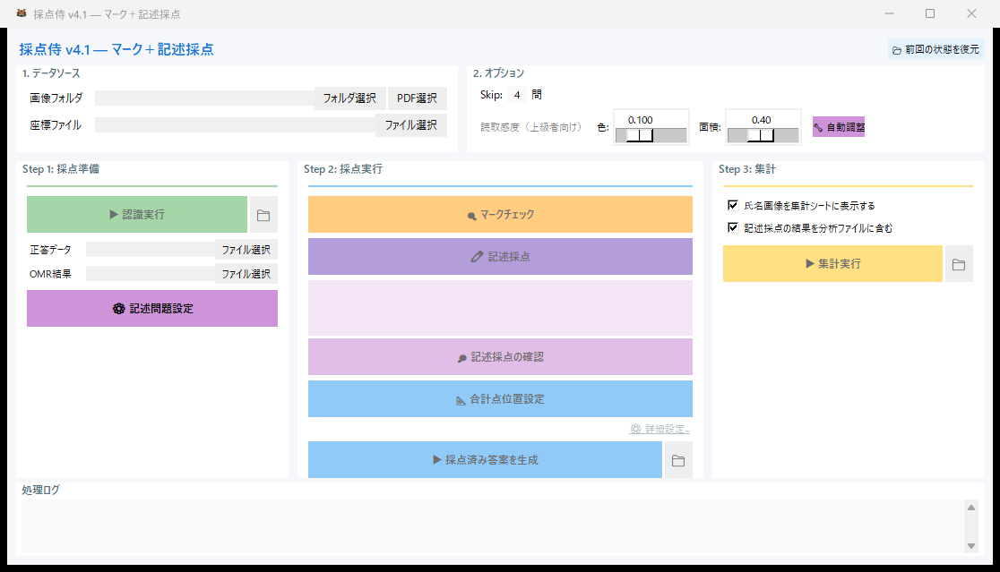
14b — 画面遷移: メイン画面